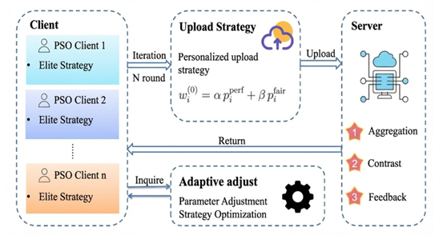
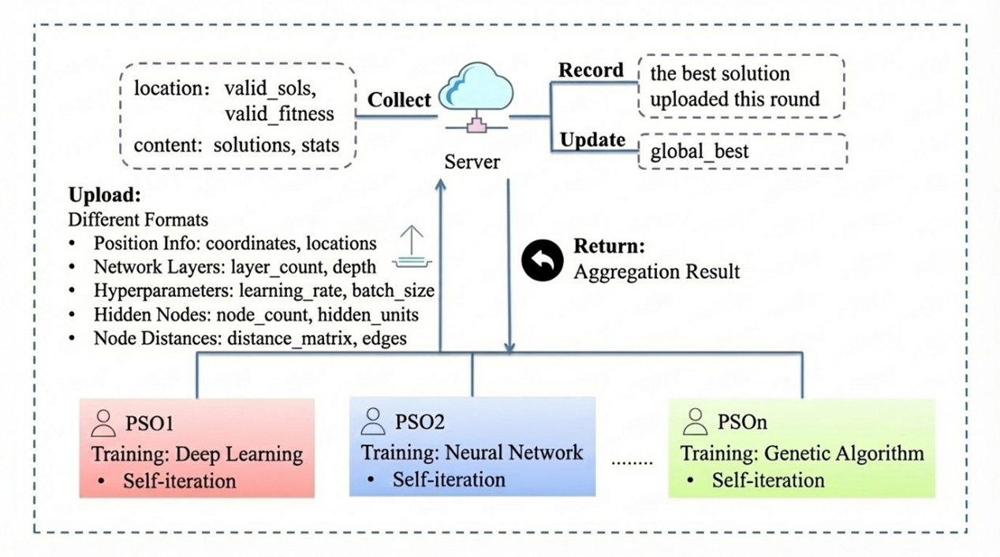

朱东林
基本信息
- 毕业院校：浙江师范大学
- 电话号码：15270882338（微信同号）
- 博士专业：计算机科学与技术
- 电子邮箱：zdl0730@163.com
- 出生年月：1997年7月
教育背景
2022.09-2026.07 浙江师范大学 计算机科学与技术-博士
2019.09-2022.07 江西理工大学 计算机技术-硕士
2015.09-2019.07 江西应用科技学院 物联网工程-本科
个人简介
东华理工大学软件学院讲师，博士期间连续多年荣获一等学业奖学金（班级唯一名额），综测排名第一，同时获得博士国家奖学金，优秀研究生标兵，十佳学子，十佳学术之星等称号。指导了100多名硕士及20多名本科生的科研工作，其中5名硕士成功上岸211/985高校，本科生多人发表SCI一作论文，且荣获国家奖学金、省政府奖学金、多项A+赛事国奖，具有丰富的指导经验。
熟悉使用matlab编程语言，在人工智能、优化算法、数据结构等理论知识上具有清晰地认知，在赣州师范高等专科学校代课两年半，在江西应用技术职业学院代课半年，具有丰富的教学经验。
SCOPUS主页：https://www.scopus.com/authid/detail.uri?authorId=57223052780
DBLP主页：https://dblp.org/pid/170/1745.html
Github主页：https://github.com/Donglin0730
深度掌握150+期刊的审稿偏好与收录动态，能精准匹配学生论文的最佳投稿目标。同时，我与国外知名高校、国内多所985/211、双一流高校的科研团队保持深度合作，助力学生拓展国际化学术视野，提升论文发表成功率
欢迎有理想抱负且有凝聚力的同学们进行联系，一起搞事情，探讨学术，做有价值有意义的工作。
研究特色：联邦进化学习框架(以粒子群为例)
参考论文：Federated Learning Particle Swarm Optimization Algorithm for Global Optimization
我们要解决什么问题？
在传统的粒子群优化（PSO）中，所有粒子都在同一个中心化种群中进化。但当优化问题分布在多个异构设备或不同数据环境中时，中心化方法不可行。我们的思路是：每个客户端运行自己的 PSO，然后通过一个中央服务器把各客户端的优秀解“聪明的”聚合起来，再反馈给客户端，实现多种群的协同进化。
具体怎么做？
每个客户端（可以是不同的无人机、边缘设备或计算节点）独立运行一个 PSO 种群，并采用精英策略：只保留自己找到的最优解。
所有客户端定时把各自的精英解上传到中央服务器。
服务器收到后，执行 “上传 — 聚合 — 对比 — 反馈” 四步流程：
聚合：把不同客户端的优秀解融合成全局更优的知识。
对比：比较客户端之间的解，找出哪些客户端的贡献更有价值。
反馈：把聚合后的信息以及对比结果发回给各客户端，指导它们调整自己的搜索参数（比如惯性权重、学习因子）和优化搜索策略。
这个过程不断迭代，每个客户端既保持了自己的局部搜索能力，又能从全局经验中受益。
核心优势
支持异构客户端：不同客户端的目标函数、搜索空间甚至计算资源都可以不同，无需统一模型。
避免了中心化 PSO 的通信瓶颈和隐私风险。
通过对比反馈机制，有效防止陷入局部最优，全局收敛速度更快。

未来研究：异构进化生态与跨模态聚合
当前框架中所有客户端都使用 PSO。未来我们计划允许不同客户端采用完全不同的优化算法（例如有的用遗传算法，有的用粒子群，有的用深度学习训练器），并且客户端上传的信息也不再局限于粒子的位置，而是可以包括网络层数、超参数、隐藏节点数、节点距离矩阵等多种异构格式。
未来框架的关键特征
客户端可以自由选择最适合自己本地问题的优化方法（PSO、GA、深度强化学习等）。上传的内容灵活多样：可以是坐标位置、神经网络结构、超参数配置、拓扑距离矩阵等。服务器需要具备跨模态聚合能力：把这些不同格式、不同算法的优化知识统一表征，提取共性，再生成回馈策略。
服务器记录并维护一个全局最优解池，同时根据历史信息动态构建“自适应策略库”，供客户端查询使用。
三个主要研究方向
跨算法知识蒸馏：把不同优化器的演化经验（例如 PSO 的群体行为、遗>传算法的选择变异、深度学习的梯度信息）进行融合，通过服务器对比学习产生增强知识，反哺弱势客户端。
联邦环境下的自适应策略优化：户端根据服务器返回的全局统计信息（比如哪些区域已经被大量搜索过），动态调整自己的搜索强度、变异概率或精英保留比例。
多模态信息聚合：不再局限于位置坐标，而是支持结构化的优化信息（比如神经网络层数、距离矩阵）的统一处理，让联邦进化优化可以应用到神经架构搜索、超参数优化等更多场景。
长远愿景：构建一个开放、异构、自演化的联邦进化生态，为大规模分布式优化问题（如无人机集群、边缘智能、元学习）提供全新的基座。

学术成果：
研究方向为进化计算及应用，截止2026年2月，发表论文SCI期刊50余篇，以第一作者录用及发表10篇SCI/EI期刊论文，其中SCI一区6篇，高被引论文3篇；以通信作者发表SCI期刊论文10余篇，另有其他作者论文数篇。具体代表作如下：
1. Zhu, Donglin, et al. "Multi-strategy particle swarm optimization with adaptive forgetting for base station layout." Swarm and Evolutionary Computation 91 (2024): 101737.（SCI一区top， 进化计算顶级期刊，IF=8.5）
2. Zhu, Donglin, et al. "Human Memory Optimization Algorithm: A memory-inspired optimizer for Global Optimization Problems." Expert Systems with Applications (2023): 121597.（SCI一区top（高被引论文）， 进化计算权威期刊，IF=7.5 ）
3. Zhu, Donglin, et al. "Manta ray foraging optimization based on mechanics game and progressive learning for multiple optimization problems." Applied Soft Computing (2023): 110561.(SCI一区top， 进化计算权威期刊，IF=7.2)
4. Zhu, Donglin, et al. "Improved bare bones particle swarm optimization for dna sequence design." IEEE transactions on nanobioscience (2022).（SCI三区（高被引论文），IF=3.7 ）
5. Zhu, Donglin, et al. “Cumulative major advances in Particle Swarm Optimization from 2018 to the present: Variants, Analysis, Applications”, Archives of Computational Methods in Engineering (SCI一区top，IF=9.7)
6. Zhu, Donglin, et al. “Group Merging Particle Swarm Optimization Algorithm for Rural Base Station Deployment”. IEEE Transactions on Emerging Topics in Computational Intelligence.（SCI二区，进化计算权威期刊，IF=5.7，已录用）
7. Jiaying Shen, Zhu, Donglin*, et al. “Efficient base station deployment in specialized regions with splitting particle swarm optimization algorithm”. World Wide Web(2024), 27(4), 1-24.（SCI三区,CCF B, IF=2.7）
8. Zhu, Donglin, et al. “DNA sequence-inspired similarity-driven particle swarm optimization for UAV-BSs deployment”. IEEE Internet of Things Journal.（SCI一区）
9. Jiaying Shen, Zhu, Donglin*, et al. A Effective Approach to Base Station Placement: Leveraging Enhanced Particle Swarm Optimization for Signal Propagation Optimization”. IEEE Internet of Things Journal.（SCI一区）
在学术服务中，担任International Journal of Numerical Methods for Calculation and Design in Engineering期刊青年编委，也为40多个国际学术期刊的审稿专家，其中包括IEEE Transactions on Industrial Informatics、IEEE Transactions on Intelligent Transportation Systems、Swarm and Evolutionary Computation等顶级期刊的常驻审稿人，总审稿次数已达200。
在科研项目中，承担与参与了9个课题项目，其中包括国家自然科学基金项目(导师为负责人，排名7/16)、国家创新创业基金项目（参与与指导）、校级项目（排名第三）、院级项目（排名第三），另有多个项目在审核中。